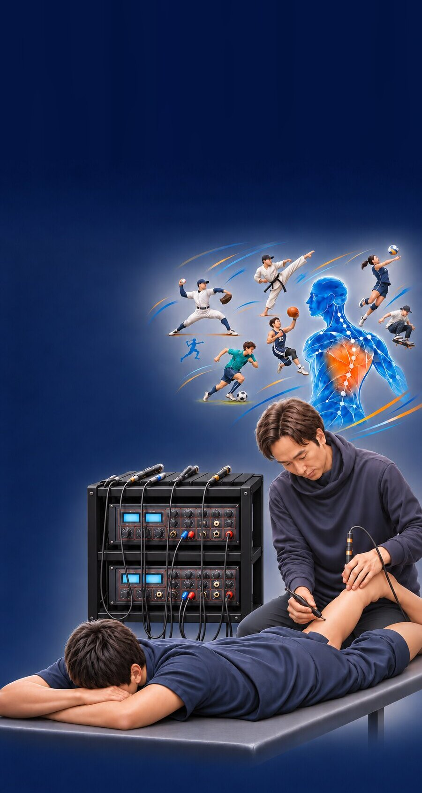
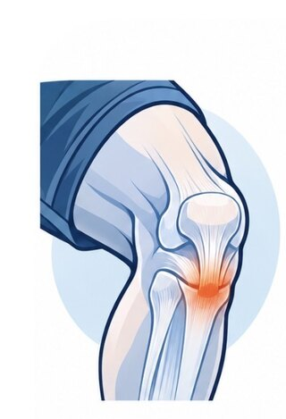
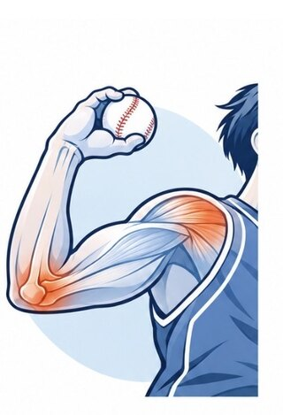
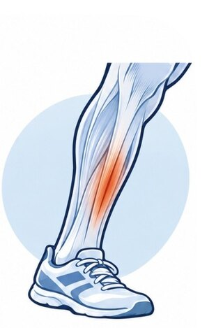
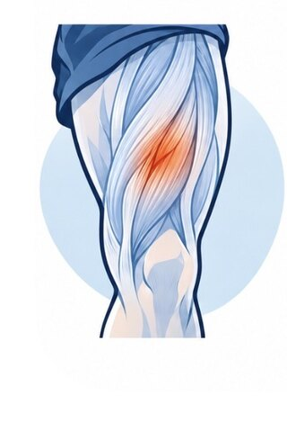
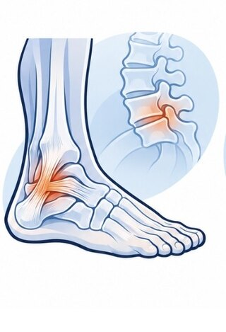
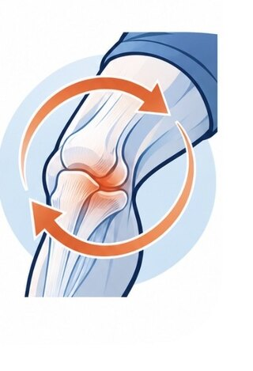
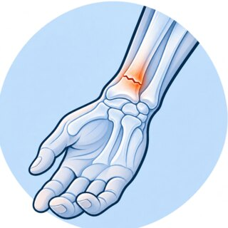
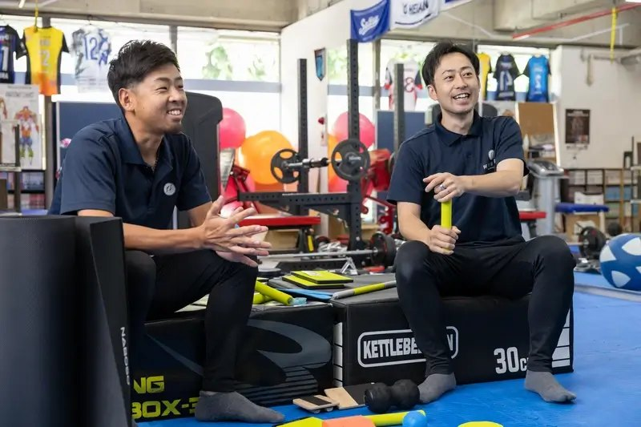
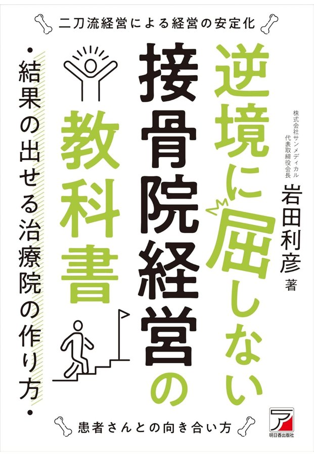

サポート実績
トップレベルの現場で積み重ねた経験を、
一人ひとりの施術に活かしています。
女子バスケットボール部トレーナー
大阪薫英女学院・大阪人間科学大学
高校男子バレーボール部トレーナー
昇陽高校
少年サッカー トレーナー
AVANTI茨木
プロ格闘家 サポート
RISE・大森隆之介 選手（バンタム級1位／フェザー級1位）ほか
プロ野球選手 自主トレ帯同
オフシーズンのトレーニングをサポート
MLB アメリカ研修
メジャーリーグの現場を視察・研修（2025・2026年）
回復を後押しする施術を行います
競技復帰まで見据え、現場目線で施術します
状態を確認し、施術方針の参考にします
待ち時間なく施術を受けられます
充実の施術機器

アメリカ研修では、現地のトレーナーに「MLBの球団よりそろっているね」と言われたことも。

オスグッド／
ジャンパー膝

野球肘／
野球肩

シンスプリント／
疲労骨折の疑い

もも・ふくらはぎ
の肉離れ

足首の捻挫／
腰椎分離症

オーバーユース／
ぶり返す痛み

術後の痛み／
傷あとのケア

骨折／
剥離骨折

自律神経の
乱れ・不調

「ナボソ製品を使わない日はない」
インタビュー掲載

『逆境に屈しない
接骨院経営の教科書』掲載
完全予約制になります。
もちろん状況によりますが、できるだけご希望に添えるようプランを模索します。
基本的に完全自費の施術になります。
もちろんです。大人の慢性痛の方も多数お越しになっています。